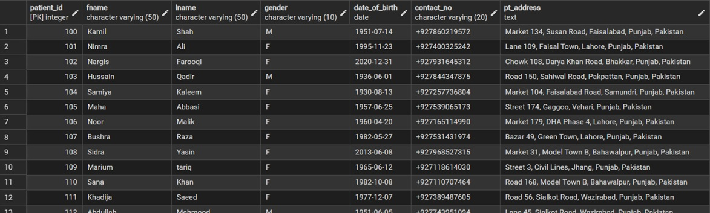
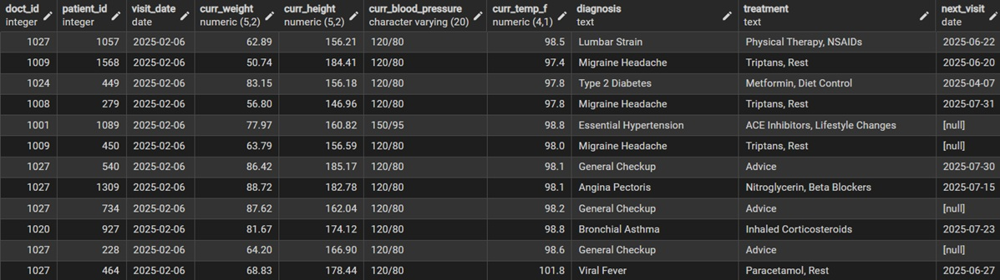
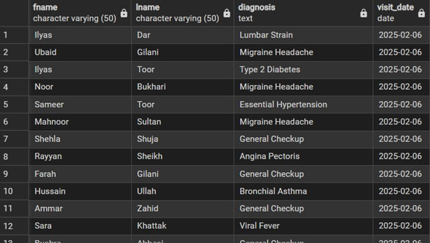
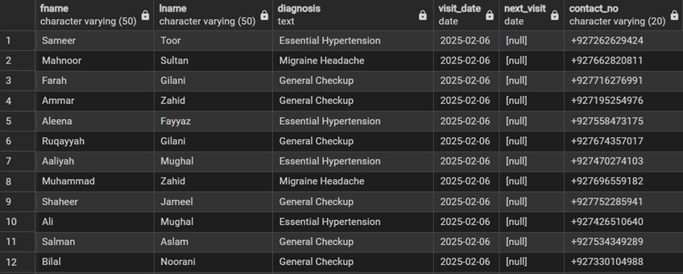
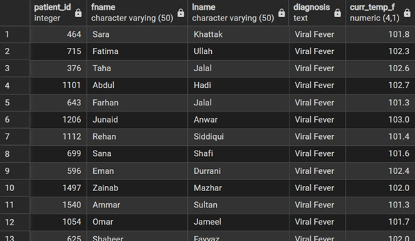

In this project, I took two separate datasets (spreadsheets) containing patient demographics and clinical visit records and imported them into a PostgreSQL database..
I used SQL to "connect the dots" between these files to find administrative gaps and clinical risks that aren't obvious in a standard spreadsheet.
In summary, the goal was to reorganize patient information, identify patients missing follow-up appointments, and prioritize high-risk cases based on physiological data.
You can find the raw data I used in my repository titled :"Hospital Management System.xlsx"
To begin the analysis, I translated raw CSV data into a structured relational format within PostgreSQL. I defined the table schemas to ensure that each data point—from patient IDs to physiological metrics—was stored with the correct data type (such as DECIMAL for precision and DATE for visit tracking). This foundation allows for accurate querying across separate datasets.
CREATE TABLE PATIENTS (
PATIENT_ID INT PRIMARY KEY,
FNAME VARCHAR(50) NOT NULL,
LNAME VARCHAR(50) NOT NULL,
GENDER VARCHAR(10),
DATE_OF_BIRTH DATE NOT NULL,
CONTACT_NO VARCHAR(20) UNIQUE,
PT_ADDRESS TEXT
);
Query Result:

The second sheet, records is brought into sql by creating the table for it.
CREATE TABLE RECORDS (
RECORD_ID INT PRIMARY KEY,
DOCT_ID INT,
PATIENT_ID INT,
VISIT_DATE DATE,
CURR_WEIGHT DECIMAL(5, 2),
CURR_HEIGHT DECIMAL(5, 2),
CURR_BLOOD_PRESSURE VARCHAR(20),
CURR_TEMP_F DECIMAL(4, 1),
DIAGNOSIS TEXT,
TREATMENT TEXT,
NEXT_VISIT DATE
);
---Create Records table holding these columns.
Query Result:

Join two seperate tables with the shared column patient_id to find the necessary information
SELECT
p.fname,
p.lname,
r.diagnosis,
r.visit_date
FROM patients p
JOIN records r ON p.patient_id = r.patient_id;
--- patients full name, diagnosis, and their visit dates ---
--- Join diagnosis and visit date columns of this sheet onto the patients sheet but only selecting 4 columns specified above.
Query Result:

Join two seperate tables with the shared column patient_id to find the necessary information
SELECT
p.fname,
p.lname,
r.diagnosis,
r.visit_date,
p.contact_no
FROM patients p
JOIN records r ON p.patient_id = r.patient_id
WHERE r.next_visit is NULL
--call them and schedule next visit because their next schedule is empty
Query Result:

Join two seperate tables with the shared column patient_id to find the necessary information
SELECT
p.patient_id,
p.fname,
p.lname,
r.diagnosis,
r.curr_temp_f
FROM records r
JOIN patients p ON r.patient_id = p.patient_id
WHERE r.curr_temp_f > 101.0;
--- Full name, patient_id, temperature above 101F in risk patients to focus attention on---
Query Result:
